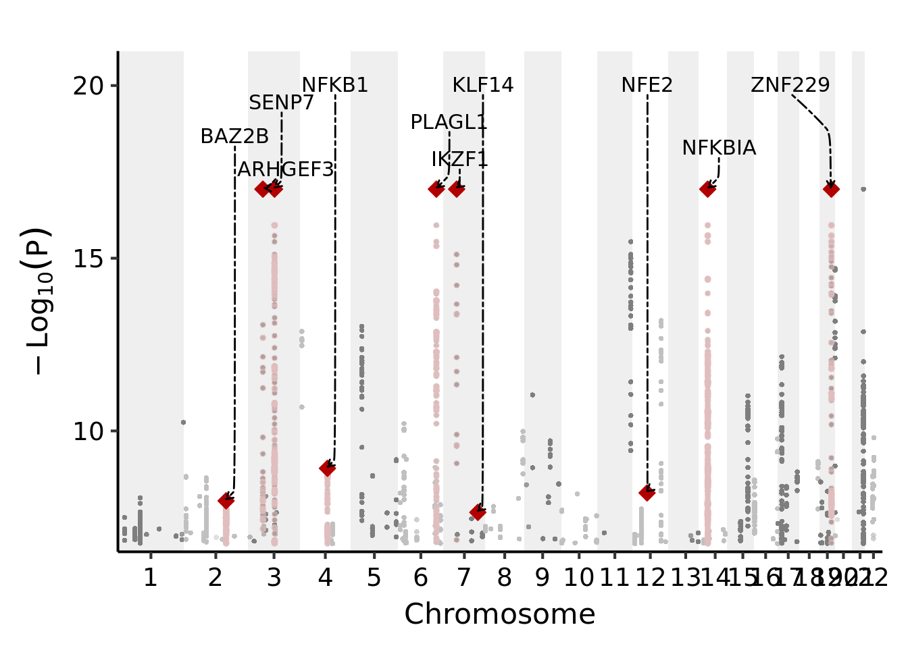

Annotate cis genes of the identified trans signals to help understand the mechanisms of trans regulation.
I looked at what genes are nearest or near (<1Mb) to each trans signals.
# I/O & paras -----
file_qtl <- '/project2/xuanyao/llw/DGN_no_filter_on_mappability/FDR/signals.chr.module.perm10.fdr10.txt'
file_gene_meta <- '/project2/xuanyao/data/mappability/gencode.v19.annotation.table.txt'
dis_cis <- 1e+6
# read files -----
qtl <- fread(file_qtl, header = FALSE, col.names = c("signal", "p", "q"))
gene_meta <- fread(file_gene_meta, header = TRUE)
# organize data -----
## extract signals' module, chr, pos -----
qtl <- qtl %>%
separate("signal",
into = c("module", "chr", "pos"),
sep = ":", remove = FALSE, convert = TRUE) %>%
unite(col = "SNP",
c("chr", "pos"),
sep = ":", remove = FALSE)
## extract protein_coding, lincRNA, auto-chr genes -----
gene_meta <- gene_meta %>%
filter(Class %in% c("protein_coding", "lincRNA") & Chromosome %in% paste0("chr",1:22)) %>%
separate("Chromosome", c(NA, "chr"), sep = "chr", remove = FALSE)
# nearest and cis genes of each signal, with distance -----
cis_gene_meta <- sapply(1:nrow(qtl), function(x){
tmp_qtl = qtl[x, ]
tmp_cis_gene_meta = gene_meta %>%
filter(chr %in% tmp_qtl$chr) %>%
mutate("dis" = abs(tmp_qtl$pos - Start)) %>%
filter(dis < dis_cis/2) %>%
arrange(dis)
c(
tmp_cis_gene_meta$GeneSymbol[1],
tmp_cis_gene_meta$dis[1],
paste(tmp_cis_gene_meta$GeneSymbol, collapse = ";"),
paste(tmp_cis_gene_meta$dis, collapse = ";")
)
})
cis_gene_meta <- as.data.table(t(cis_gene_meta))
colnames(cis_gene_meta) <- c("nearest_gene", "nearest_dis", "near_genes", "near_dis")
## add cis gene info to signals -----
qtl <- bind_cols(qtl, cis_gene_meta)Let’s look at one example.
qtl <- fread('/project2/xuanyao/llw/DGN_no_filter_on_mappability/postanalysis/signal_cis_genes.txt')Columns are,
colnames(qtl)## [1] "signal" "module" "SNP" "chr" "pos"
## [6] "p" "q" "nearest_gene" "nearest_dis" "near_genes"
## [11] "near_dis"The last four columns give the nearest and near genes, and the distance between the trans-eQTL on each row and corresponding genes. For example,
knitr::kable(qtl[1, ])| signal | module | SNP | chr | pos | p | q | nearest_gene | nearest_dis | near_genes | near_dis |
|---|---|---|---|---|---|---|---|---|---|---|
| module1:4:6696460 | module1 | 4:6696460 | 4 | 6696460 | 0 | 0 | S100P | 1664 | S100P;AC093323.1;RP11-539L10.2;MRFAP1L1;AC093323.3;BLOC1S4;RP11-539L10.3;MRFAP1;KIAA0232;MAN2B2;TBC1D14;CCDC96;TADA2B;GRPEL1;PPP2R2C;RP11-367J11.3;WFS1;RP11-1406H17.1;RP11-586D19.2;RP11-586D19.1;SORCS2 | 1664;2678;7285;12968;21282;21382;24008;54642;86642;119558;214509;346119;347166;364173;374155;399838;424884;455292;492405;494000;497805 |
The trans-eQTL “4:6696460” (with target module 1) is nearest to gene S100P. The last column also gives all genes within 1Mb of this signal.
I wanted to look at what transcription factors or master trans regulator genes are near the identified trans-eQTLs. And then annotate them on a gene manhattan plot.
# I/O & paras -----
file_signal_cis_genes <- '/project2/xuanyao/llw/DGN_no_filter_on_mappability/postanalysis/signal_cis_genes.txt'
file_chr_pos <- '/scratch/midway2/liliw1/sig_module_chr/chromosome_location.rds'
# read files -----
signal_cis_genes <- fread(file_signal_cis_genes, header = TRUE)
chr_pos <- readRDS(file_chr_pos)
# one p for one snp across modules -----
snp_cis_genes <- signal_cis_genes %>%
group_by(SNP, chr, pos, nearest_gene, near_genes, nearest_dis, near_dis) %>%
summarise('p' = min(p),
'n_module' = n()) %>%
mutate('-logp' = -log10(p)) %>%
ungroup()
snp_cis_genes <- separate_rows(
snp_cis_genes,
near_genes, near_dis,
sep = ";", convert = TRUE
)
# change 0 p -----
snp_cis_genes[is.infinite(snp_cis_genes$`-logp`), "-logp"] <-
(max(snp_cis_genes$`-logp`[!is.infinite(snp_cis_genes$`-logp`)]) + 1) %>% ceiling()
# genes of interest -----
gene_of_interest <- c("BAZ2B", "NFKBIA", "PLAGL1", "NFE2", "IKZF1", "KLF1", "KLF14", "NFKB1", "NFKBIA", "ZNF229", "BAZ2B", #TF
"ARHGEF3", "SENP7")
# nearest & near gene of interest col -----
snp_cis_genes <- mutate(
snp_cis_genes,
"if_gene_of_interest_nearest" = nearest_gene %in% !!gene_of_interest,
"if_gene_of_interest_near" = near_genes %in% !!gene_of_interest,
)
plt_dat <- snp_cis_genes %>%
left_join(chr_pos, by = c("chr" = "CHR")) %>%
mutate(def_pos = pos + tot)
# same annotation, pick the smallest p ----
annot_gene <- filter(plt_dat, if_gene_of_interest_near) %>%
mutate("label_gene_of_interest" = near_genes) %>%
group_by(label_gene_of_interest) %>%
summarise(`-logp` = max(`-logp`),
chr = chr, pos = pos, def_pos = def_pos) %>%
ungroup() %>%
distinct(label_gene_of_interest, .keep_all = TRUE)
annot_snp <- filter(plt_dat, if_gene_of_interest_near) %>%
mutate("label_gene_of_interest" = near_genes)These are the genes of interest to be annotated,
knitr::kable(annot_gene)| label_gene_of_interest | -logp | chr | pos | def_pos |
|---|---|---|---|---|
| ARHGEF3 | 17.000000 | 3 | 56848953 | 549073711 |
| BAZ2B | 7.974534 | 2 | 160427158 | 409601840 |
| IKZF1 | 17.000000 | 7 | 50258234 | 1282856609 |
| KLF14 | 7.640718 | 7 | 130536491 | 1363134866 |
| NFE2 | 8.204420 | 12 | 54685880 | 2004114576 |
| NFKB1 | 8.915563 | 4 | 103444474 | 793508162 |
| NFKBIA | 17.000000 | 14 | 35372518 | 2233699109 |
| PLAGL1 | 17.000000 | 6 | 144278562 | 1205967141 |
| SENP7 | 17.000000 | 3 | 100831857 | 593056615 |
| ZNF229 | 17.000000 | 19 | 44889660 | 2702138865 |
Plot these genes on the manhattan plot,
# Manhattan plot of cis TF's -----
base_plt <- ggplot(plt_dat, aes(x = def_pos, y = `-logp`)) +
geom_rect(
aes(xmin = tot, xmax = xmax,
ymin = -Inf, ymax = Inf,
fill = factor(chr))
) +
geom_point(aes(color = factor(chr)), alpha = 0.5, size = 1, shape = 16) +
geom_point(data = annot_snp,
color = "#e2bebe", alpha = 0.5, size = 1) +
geom_point(data = annot_gene,
color = "#b20000", fill = "#b20000", shape=23, size = 3) +
geom_text_repel(data = annot_gene,
aes(label = label_gene_of_interest),
segment.colour="black",
size = 4,
min.segment.length = 0,
max.overlaps = 5,
nudge_x = -0.5,
nudge_y = 30,
box.padding = 1,
segment.curvature = -0.1,
segment.ncp = 5,
segment.angle = 20,
direction = "y",
hjust = "left",
segment.linetype = 6,
arrow = arrow(length = unit(0.015, "npc"))
) +
labs(x = "Chromosome", y = quote(-Log[10](P)))
base_plt +
scale_x_continuous(
limits = c(0, max(chr_pos$center)*2 - max(chr_pos$tot)),
label = chr_pos$CHR,
breaks = chr_pos$center,
expand = c(0, 0)
) +
scale_y_continuous(expand = c(0, 0), limits = c(6.5, 21) ) +
scale_color_manual(values = rep(c("#7e7e7e", "#bfbfbf"), 22), guide = "none") +
scale_fill_manual(values = rep(c("#efefef", "#ffffff"), 22), guide = "none") +
theme_my_pub()
sessionInfo()## R version 4.1.2 (2021-11-01)
## Platform: x86_64-conda-linux-gnu (64-bit)
## Running under: Ubuntu 20.04.3 LTS
##
## Matrix products: default
## BLAS/LAPACK: /scratch/midway2/liliw1/conda_env/rstudio-server/lib/libopenblasp-r0.3.18.so
##
## locale:
## [1] LC_CTYPE=en_US.UTF-8 LC_NUMERIC=C
## [3] LC_TIME=en_US.UTF-8 LC_COLLATE=en_US.UTF-8
## [5] LC_MONETARY=en_US.UTF-8 LC_MESSAGES=en_US.UTF-8
## [7] LC_PAPER=en_US.UTF-8 LC_NAME=C
## [9] LC_ADDRESS=C LC_TELEPHONE=C
## [11] LC_MEASUREMENT=en_US.UTF-8 LC_IDENTIFICATION=C
##
## attached base packages:
## [1] stats graphics grDevices utils datasets methods base
##
## other attached packages:
## [1] ggrepel_0.9.1 forcats_0.5.1 stringr_1.4.0 dplyr_1.0.7
## [5] purrr_0.3.4 readr_2.1.2 tidyr_1.2.0 tibble_3.1.7
## [9] ggplot2_3.3.6 tidyverse_1.3.1 data.table_1.14.2
##
## loaded via a namespace (and not attached):
## [1] tidyselect_1.1.1 xfun_0.29 bslib_0.3.1 haven_2.4.3
## [5] colorspace_2.0-3 vctrs_0.4.1 generics_0.1.2 htmltools_0.5.2
## [9] yaml_2.2.2 utf8_1.2.2 rlang_1.0.3 jquerylib_0.1.4
## [13] pillar_1.7.0 withr_2.5.0 glue_1.6.2 DBI_1.1.3
## [17] dbplyr_2.1.1 modelr_0.1.8 readxl_1.3.1 lifecycle_1.0.1
## [21] cellranger_1.1.0 munsell_0.5.0 gtable_0.3.0 rvest_1.0.2
## [25] evaluate_0.14 labeling_0.4.2 knitr_1.37 tzdb_0.2.0
## [29] fastmap_1.1.0 fansi_1.0.3 highr_0.9 Rcpp_1.0.8.3
## [33] broom_0.7.12 backports_1.4.1 scales_1.2.0 jsonlite_1.7.3
## [37] farver_2.1.1 fs_1.5.2 hms_1.1.1 digest_0.6.29
## [41] stringi_1.7.6 grid_4.1.2 cli_3.3.0 tools_4.1.2
## [45] magrittr_2.0.3 sass_0.4.0 crayon_1.5.1 pkgconfig_2.0.3
## [49] ellipsis_0.3.2 xml2_1.3.3 reprex_2.0.1 lubridate_1.8.0
## [53] assertthat_0.2.1 rmarkdown_2.11 httr_1.4.2 rstudioapi_0.13
## [57] R6_2.5.1 compiler_4.1.2